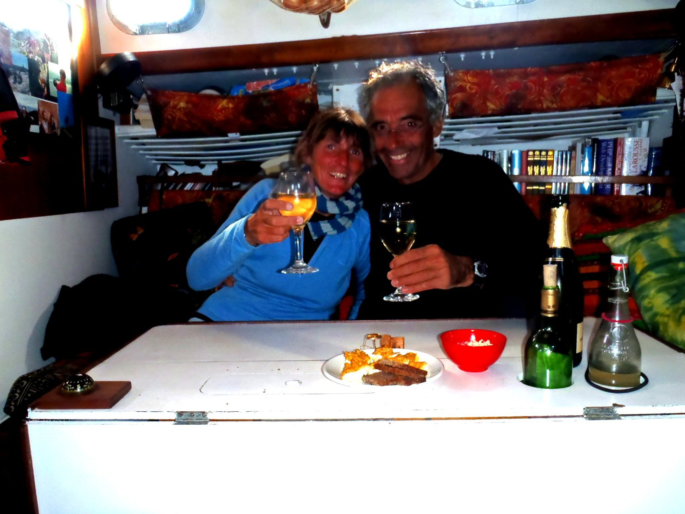

Samedi 23 avril 2011

Dimanche 24 avril 2011
Des albatros tournent autour du bateau. Deux espèces, une toute noire, et une autre - comme celle qu' on avait vue dans l'ouest de O'Ahu - blanche.
Lundi 25 avril 2011
Mardi 26 avril 2011
Mercredi 27 avril 2011
Pas de vent à 13 heures... Et on ne veut pas trop utiliser le moteur, on va gérer le calme.
Le vent semble revenir vers 16 heures, on dirait qu'on a franchi ce col entre les deux anticyclones (voir le fax).
La nuit est superbe ce soir.
Jeudi 28 avril 2011

Le vent demeure léger pour le reste de la journée, mais au moins on a du vent.
Vendredi 29 avril 2011

Samedi 30 avril 2011
Dimanche 1er mai 2011
Des nuages, du vent variable et léger, des grains, ça ressemble beaucoup à l'ITCZ, avec des températures un peu plus basses cependant.
Il y a beaucoup de cochonneries qui flottent dans l'eau, principalement du matériel de pêche (des lignes, des filets, des flotteurs, tout ça).
Les albatros viennent toujours nous voir tous les jours.
Lundi 2 mai 2011

Mardi 3 mai 2011

Envoyé l'artimon vers midi.
Mercredi 4 mai 2011
Il revient vers 10:30..., et le temps se dégage. C'est toujours léger, mais on avance.
Jeudi 5 mai 2011
On attend toujours que le vent passe a l'ouest.
Le vent tombe complétement dans l'après midi, plus rien du tout. Les voiles battent, on roule le yankee pour ne pas qu'il s'abîme.
Vendredi 6 mai 2011

Du crachin, comme en Bretagne.
Samedi 7 mai 2011

Puis le vent retombe, tourne, reprend, retombe... Largué le ris à 16 heures. Le vent oscille autour du nord.
Dimanche 8 mai 2011
Lundi 9 mai 2011
Mardi 10 mai 2011
Le vent vient le l'ouest, enfin !
Mais c'est toujours très léger. On porte yankee, trinquette, un ris dans la grand'voile, pour ne pas qu'elle battent de trop.
À 10 heures, on marche a deux nœuds ! Wow !
Les albatros viennent toujours nous voir, tous les jours. Ils tournent plusieurs fois autour du bateau, et ils partent ailleurs...
À 18 heures, on prend un autre ris dans la grand'voile, pour équilibrer, on marche à 6 nœuds, incroyable !
Mercredi 11 mai 2011

Et il fait froid ! L'eau est à 13°C, la température de l'air est voisine, et avec le vent, ça caille.
Mais on a fait 130 milles pendant les dernières 24 heures.
Jeudi 12 mai 2011
Il y a une houle pénible du nord-ouest.
Le vent tourne W¼NW, on empanne. Comme ça, la houle est moins chiante.
On empanne à nouveau à 18 heures, cap au nord-est.
Vendredi 13 mai 2011
La mer est un vrai bordel.
Des lignes de grains, et le temps est vraiment froid ! On a 5 Beaufort, de l'ouest.
Le vent atteind 30 nœuds dans les grains.
Samedi 14 mai 2011
Dans la soirée, on ne porte que le yankee et la trinquette, ça facilite le travail du pilote. On marche toujours à 5 nœuds.
Dimanche 15 mai 2011
À 17 heures, le baromètre commence a remonter, et le vent passe nord-nord-ouest. Ça signifie qu'on navigue le long de la face sud du talweg.
On porte maintenant yankee, trinquette et deux ris dans la grand'voile.
Lundi 16 mai 2011
Il y a un talweg juste devant nous, combiné à la dépression qui arrive, ça peut devenir intéressant.
Le vent passe sud-sud-est, ce qui veut dire que la dépression est dans notre sud. On fait du nord-est, on essaye de mettre un peu de distance entre nous et cette perturbation. On roule le yankee à 1:20.
On affale la grand'voile à 3:20, et ça continue de forcir. Et il pleut fort.
À 6 heures, le vent atteint force 8, on décide de remplacer la trinquette (celle qui est toute belle toute neuve) par la trinquette lourde. Ça serait vraiment dommage qu'elle explose. Après l'avoir affalée, prêt à envoyer sa remplaçante, on constate que le bateau se comporte très bien à sec de toile ; on n'a qu'à rester un peu comme ca !
À la cape sèche à 6:20, le vent souffle de l'est-sud-est, force 8 établi, rafales à 9 Beaufort.
On n'est pas mal, c'est bruyant, mais pas aussi inconfortable qu'on aurait pû l'imaginer. Juste après avoir affalé la trinquette, on s'est fait des pancakes. Après ça, on a fait un coup de banette, pour récupérer un peu.
Le baromètre commence à remonter dans l'après-midi.
On remet en route à 14:45, trinquette et deux ris dans la grand'voile.
On a fait environ 12 milles à la cape, on dérivait à environ 1 nœud ½.
Comme prévu, le vent tourne au nord, et mollit un peu.
Les albatros sont toujours là.
Mardi 17 mai 2011

Il y a des albatros, des puffins, et des pétrels autour de nous.
Le yankee a été esquinté près de son point d'écoute, probablement quand il battait pendant les calmes..., on va tâcher de le préserver.
Mercredi 18 mai 2011
On a vu plusieurs cargos.
Jeudi 19 mai 2011
Et on redémarre le chauffage, sur un petit jerrycan, il fait vite chaud et sec dans le bateau.
Par là-dessus, Corine avait mis de côté une bouteille de champagne. Cheers! 
Point Reyes, Drakes Bay, ces endroits sont vraiment magnifiques. Un moment on s'est demandé pourquoi on avait été si loin pour trouver des endroits sympas... On s'est rappelé quand on a mis la main dans l'eau, elle était à 9°C.